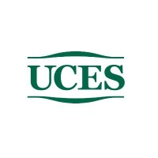
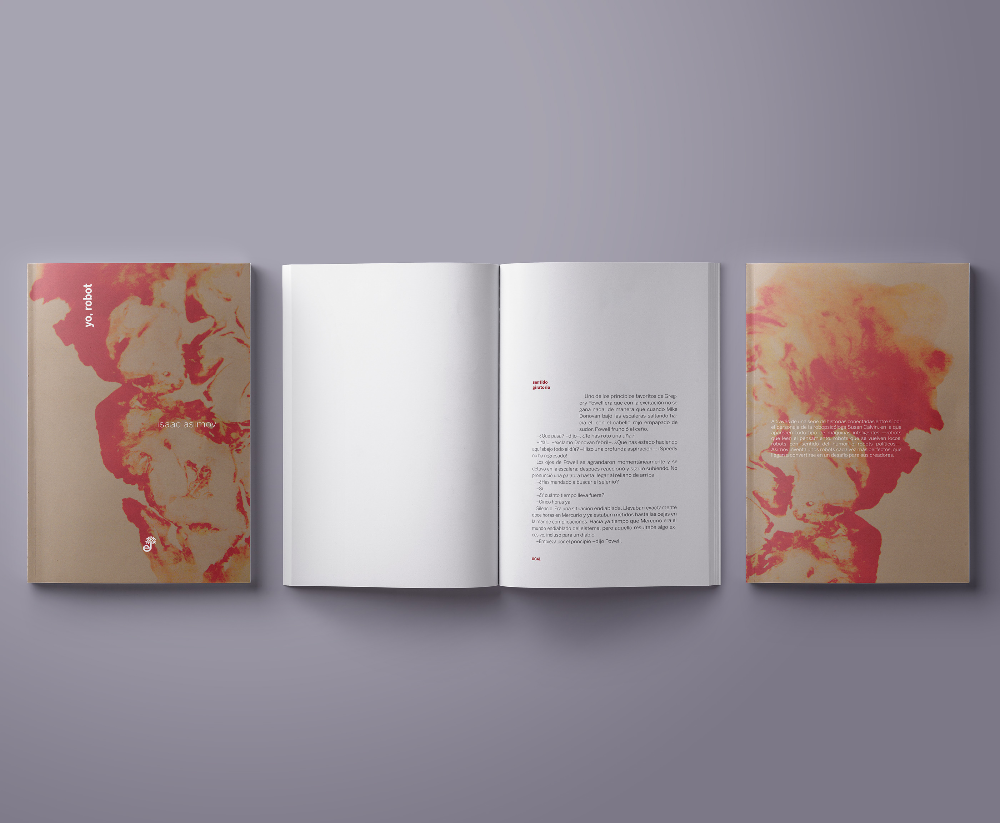
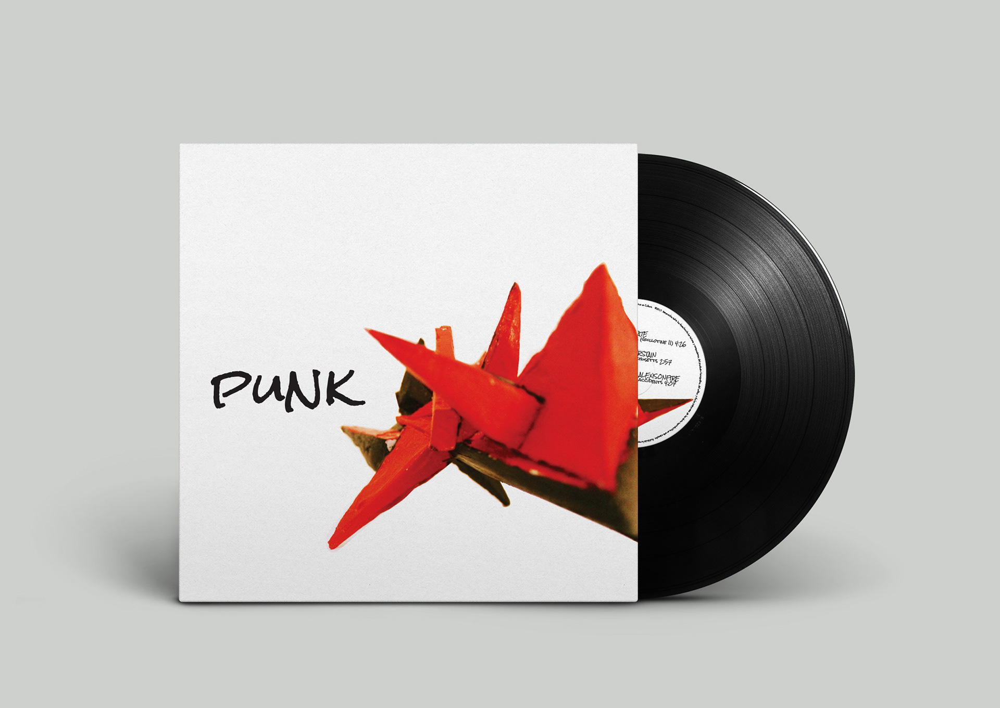
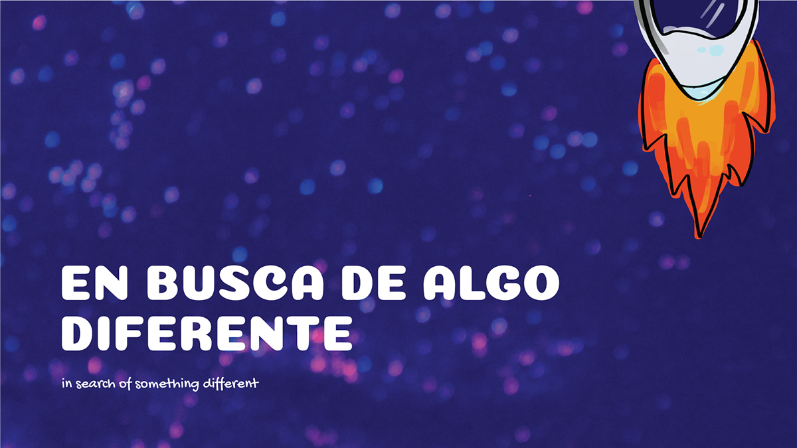
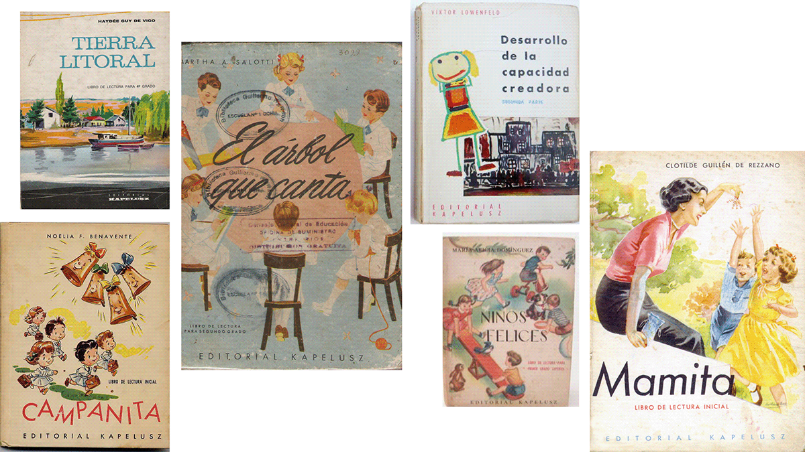
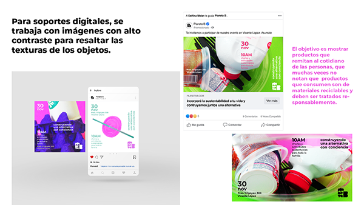
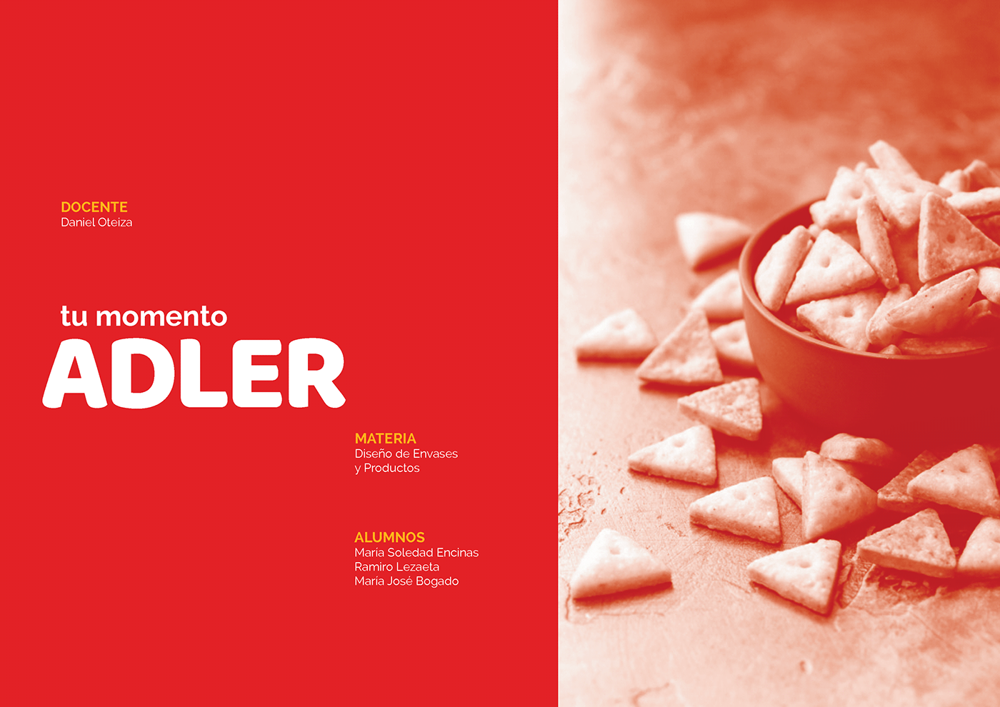
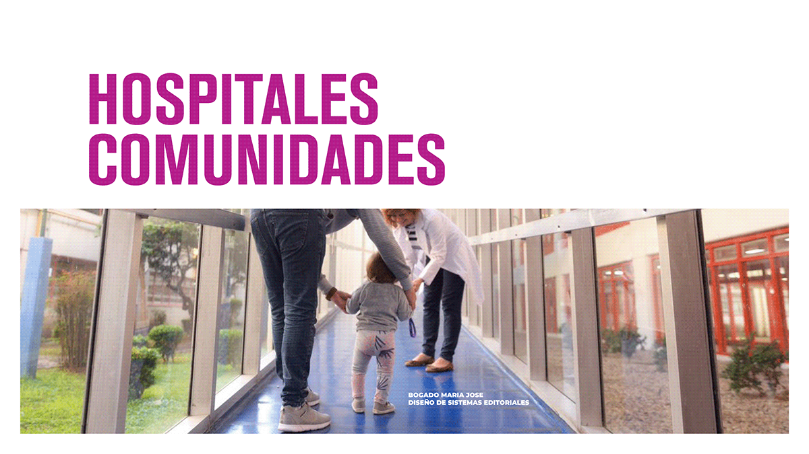
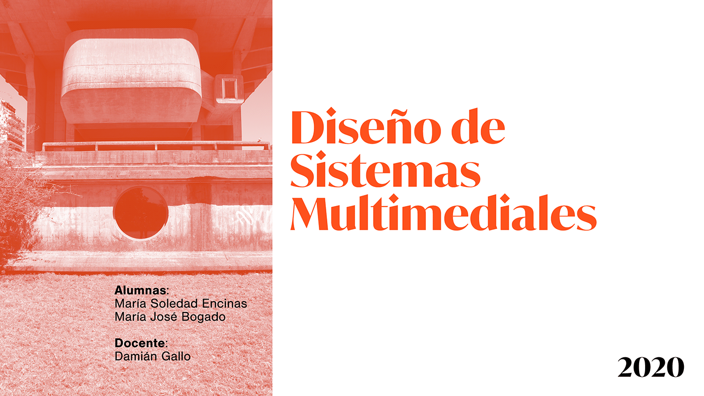

Education — undergraduate

Universidad de CienciasStudying design wasn't my first choice. I always wanted to study medicine, but life had other plans, I ended up enrolling in a Computer Systems degree, which I never finished because I started working as a software developer and things took off from there.
When I eventually decided to study design, I researched every program available and deliberately chose the Visual Design and Communication program at the Universidad de Ciencias Empresariales y Sociales (UCES). It combined design with communication, design as a tool to convey meaning, and that was key for me. Design has always been functional in my mind. Design solves problems.
One of my favorite quotes, which I think captures how I think about design, is from Ronald Shakespear, an Argentine designer:
"El diseño no está conectado con la idea del arte ni con la idea de la belleza. Está conectado con la idea de la generación de formas pragmáticas a las que se les requiere, se les exige, un resultado determinado. Cuando esa condición se cumple, cuando el resultado del diseño produce mejor calidad de vida, el diseño es, seguramente, bello."
Which could be translated as: "Design is not connected to the idea of art, nor to the idea of beauty. It is connected to the idea of generating pragmatic forms that are required — demanded — to produce a specific result. When that condition is met, when the outcome of design generates a better quality of life, design is, undoubtedly, beautiful."







